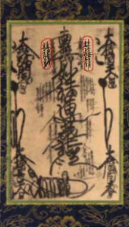
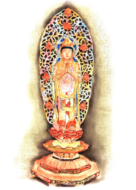

Close this window

The four leaders of the Bodhisattvas from Underground are Located in the top row either side of Shakyamuni and Taho Buddha on the Omanadala Gohonzon.

Anryugyo - Jogyo - Jogyo - Muhengyo